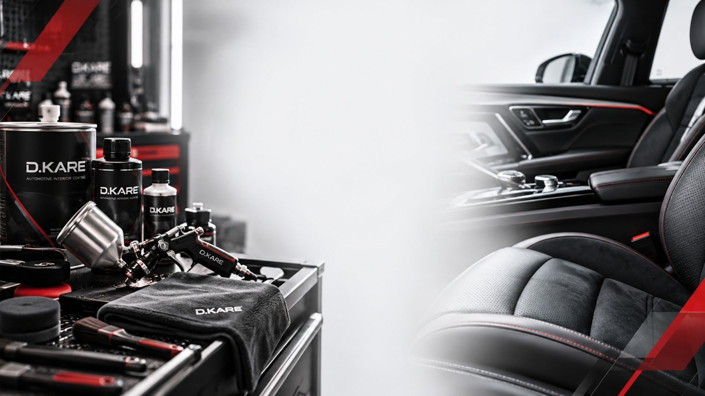
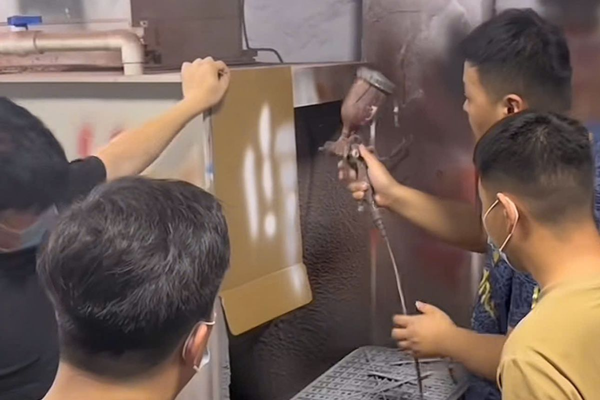

Kiến thức D.KARE
Hiểu bề mặt.
Thi công có cơ sở.
Tài liệu nhập môn dành cho người đang tìm hiểu hoặc triển khai công việc phục hồi nội thất ô tô.

Bài viết nền tảng
Nội dung tập trung vào nguyên tắc. Tỷ lệ pha, số lớp và thời gian khô phải theo tài liệu kỹ thuật của đúng sản phẩm đang dùng.

Khám phá bề mặt nội thất ô tô
Xoay mô hình khoang xe và nhận biết nhóm bề mặt nhựa, da, nỉ.
Sơn nhựa nội thất ô tô là gì?
Phạm vi sử dụng, dấu hiệu cần phục hồi và những điều nên kiểm tra trước khi thi công.

Chuẩn bị bề mặt trước khi sơn
Vì sao làm sạch, đánh giá lớp cũ và thử mẫu ảnh hưởng trực tiếp đến kết quả.

Triển khai dịch vụ phục hồi nội thất
Các nhóm công việc, dụng cụ và cách kiểm soát chất lượng cần chuẩn bị.
Tra cứu theo nhu cầu
Các trang hướng dẫn và thông tin đang có trên website.

Giải pháp từ D.KARE
Tìm hiểu từng dịch vụ, cách chuẩn bị và những thông tin cần xác nhận trước khi bắt đầu.

Phục hồi da nội thất ô tô
Nhận biết tình trạng bạc màu, trầy xước và phạm vi cần xử lý trước khi chọn phương án phục hồi.

Dịch vụ sơn nội thất cho Garage & Đối tác
Những điều garage cần chuẩn bị khi bổ sung dịch vụ phục hồi và sơn nội thất ô tô.

Phân phối sơn & vật tư
Cách xác định nhóm sản phẩm, bề mặt thi công và tài liệu cần kiểm tra trước khi chọn vật tư.

Khóa học thực hành 3 tháng
Các mục tiêu nên làm rõ trước khi tham gia chương trình học và thực hành sơn nội thất ô tô.

Đổi màu nội thất ô tô
Xác định phạm vi, màu tham chiếu và tiêu chí bàn giao trước khi bắt đầu đổi màu nội thất.